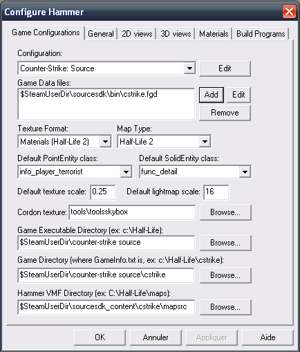

Bonjour ! Vous avez envie de mettre des armes dans votre map ? Comment fait-on ? Vous êtes sur la bonne page ! ^^ Vous verrez, c'est super simple ! Vous êtes prêts ? On y va !
Alors, moi, j'ai créé une map de test donc on s'en fiche si c'est beau ou pas ! ^^ Pour mettre une arme, il suffit de mettre une des entités commençant par weapon_.
Dis, :euh: comment on identifie chaque arme ?
Euh, vous connaissez peut-être les noms « courts » d'armes sous CS:S, non ? Eh bien, c'est cela ! Je veux poser une jolie M4A1, eh bien j'insère un weapon_m4a1, tout simplement ! Dans la vue 3D, que vois-je ? Oh ! L'arme qui correspond à celle que je veux :
Ce n'est pas joli ! Je veux que mon arme soit posée n'importe comment, et non pas bien mise et droite en équilibre ! :colere2:
Bon, clic droit sur l'arme > Propriétés. Sélectionnez l'attribut Pich Yaw Roll et puis entrez les valeurs selon vos désirs :
Vous pouvez aussi sélectionner l'entité, cliquer une deuxième fois, et faire tourner selon les ronds, comme ceci :
La méthode la plus précise est bien évidemment avec l'attribut Picht Yaw Roll. Mais vous faites comme vous voulez ! ^^
Dans Hammer, allez dans Tools > Options. Vous devriez avoir ceci :

Dans Game Data Files, sélectionnez le fichier, et cliquez sur Remove. Cliquez sur Add et prenez le fichier cstrike-gflyer108b.fgd. Maintenant, cliquez sur OK ! Et voilà ! Vous avez changé le FGD ! Et quand vous mettrez une arme, elle aura des balles !
Ce FGD vous ajoute également un certain nombre d'attributs, comme Additional Ammo, qui vous permet de choisir le nombre de chargeurs fournis avec l'arme, par défaut, le maximum.
L'autre méthode pour avoir ces attributs est de les ajouter, comme indiqué dans le tutoriel de Thunderseb concernant les armes sous Half-life 2: Deathmatch. Celle-ci est plus simple, mais la méthode de Thunderseb doit savoir être utilisée sous certains mods, comme Team Fortress 2 car certains attributs ne sont pas dans le FGD de base.
Bien. Maintenant, vous voulez que tous les joueurs aient une arme précise dès le début du round. Placez l'entité game_player_equip et modifiez ses attributs.
Par exemple, voulez-vous donner un deagle au joueur ? Oui ? Allez dans Give Night Hawk .50 C et changez le No en Yes. Ensuite, allez dans Give .50 Action Express Ammo et choisissez le nombre de balles à donner.
Comment on fait pour savoir quelles munitions correspondent à quelles armes ?
C'est simple, prenez n'importe quelles munitions, et regardez l'encadré Help. S'il y a le nom de votre arme, c'est les munitions qui correspondent, sinon, c'est d'autres munitions ! ^^
Ah oui : n'oubliez jamais de vérifier que le flagUse only est décoché. Notez également qu'au début de chaque round, les armes possédées avant le début du round sont remplacées par celles sélectionnées dans le game_player_equip.
Bon, là, si vous réfléchissez un peu, on met un game_player_equip, on choisit les armes à donner à la place, on lui donne un nom (exemple : donner_armes), on coche le flagUse Only et on utilise un trigger_once ou un trigger_multiple avec ces options :
Champs
player_weaponstrip
game_player_equip
My output named
OnStartTouch
OnEndTouch
Targets entities named
retirer_armes
donner_armes
Via this input
Strip
Use
Et voilà ! On peut lire ça comme cela : le joueur commence à toucher au trigger, ses armes sont retirées, il finit de toucher le trigger, il obtient ses armes.
Un distributeur d'armes ? C'est fun et original. L'avantage c'est que les armes sont « illimitées » ! Si vous posez une arme par terre, il n'y en aura qu'une, tandis qu'avec un distributeur, on appuie sur un bouton, et une arme est spawnée ! Pratique, n'est-ce pas ? ^^ Bon, voyons comment ça se monte, ce bazar.
Commencez par créer un distributeur, en blocs, ou avec un model.
N'oubliez pas d'y faire un trou (Carve c'est mal :diable: Clipping c'est bien :ange: ), ainsi qu'une « pente » à l'intérieur. Pour vous aider, regardez le schéma à la fin des explications ! ;)
C'est bon ? Placez le weapon_*** que vous voulez spawner dans le distributeur, ainsi qu'un point_template. Voilà, donnez un nom au weapon_ (exemple : awp), et dans les propriétés du point_template, tapez le nom du weapon_ dans Template 1. N'oubliez pas de donner un nom au template (ex. : template).
Il ne reste plus qu'à créer un output pour appeler le point_template ! Créez un bouton en blocs, ou insérez un model de bouton en plaçant devant un bloc avec la texture « tools/toolsinvisible », et transformez le(s) bloc(s) en func_button. Configurez un output comme ceci :
My output named
OnPressed
Targets entities named
template
Via this input
ForceSpawn
Terminé ! Vous avez votre distributeur ! Besoin d'aide ? Je vous ai fait un schéma. :) (Comme vous pouvez le constater, le graphisme n'est pas mon fort, mais Paint est utile pour mes tutos. :D )
Je vais vous montrer comment créer une zone d'achat (buyzone pour les intimes ^^ ). Créez un bloc avec la texture tools/toolstrigger, puis, transformez-le en entité func_buyzone. Modifiez juste un attribut : Team, qui permet de choisir quelle équipe pourra acheter des armes dans la zone d'achat. Et c'est tout ! :)
Je mets à votre disposition une map si vous n'avez pas compris ce cours, faites-en bon usage !
Alors, heureux ? Vous êtes de véritables « boss » et vous pouvez mettre plein de zones d'achat (conseillé pour une bonne map) et plein d'armes (ce qui constitue une map moyennement bien, enfin, faites comme vous voulez) ! :)